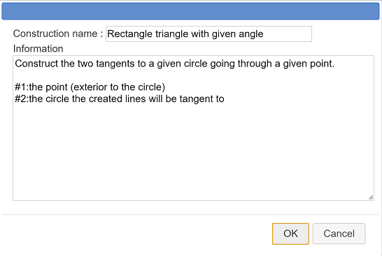
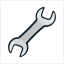

Second example of a construction creation.
We want to create a construction with the purpose of creating the two tangents to a circle through a given point (exterior to the circle).
Use icon  to create a new figure without unity length.
to create a new figure without unity length.
Use tool  to create three free points we will refer to as O, A and M.
to create three free points we will refer to as O, A and M.
Use tool  to create a circle with center O and through point A.
to create a circle with center O and through point A.
Our construction must use the circle center but must not use point O. Indeed final objects must only be constructed through the circle and point M. They are not allowed to use point O which was used to create the circle.
Use tool  to get the point O masked.
to get the point O masked.
Use icon  at the right edge of the points expandable bar and choose Circle center creation then click on the circle. A new point appears.
at the right edge of the points expandable bar and choose Circle center creation then click on the circle. A new point appears.
Use tool  to create the midpoint of the segment joining the point M to the circle center. We will call it I.
to create the midpoint of the segment joining the point M to the circle center. We will call it I.
Now create the circle with center I and going through point O.
Use intersection tool  to create the intersection of the two circles. Two points are created we will refer to as P and Q.
to create the intersection of the two circles. Two points are created we will refer to as P and Q.
Use tool  to create lines (MP) and (MQ). These are our two tangents.
to create lines (MP) and (MQ). These are our two tangents.
If necessary use icon  to get access to more tools.
to get access to more tools.
Use icon  and choose Graphical sources objects choice.
and choose Graphical sources objects choice.
First click on M then click on the first circle.
Again use icon  and choose Graphical final objects choice.
and choose Graphical final objects choice.
Click on the two tangents (lines (MP) and (MQ)).
Now we have to finalize our construction.
Use icon  then choose Finish current construction.
then choose Finish current construction.
A dialog box pops up. Fill it as below :

The first line give information about the construction.
The last two lines purpose is to give what indication will be displayed when the user will choose his sources objects.
Validate the dialog box. The construction is created. If you save your figure in a file, the construction will be saved along with the figure.
Now let us save this construction in a mgc file.
Use icon

and choose Save a construction of the figure.A dialog box pops up. The only construction is already selected. Click on the button Save file and save your construction in a mgc file (you must choose a name for the file).
Let us now use this construction in a another figure.
Use icon  to create a new figure (with or without a frame).
to create a new figure (with or without a frame).
Create a circle and a point exterior to the circle.
Use icon and choose Incorporate construction from file. Browse to the place you saved your construction to before and incorporate this mgc file in your figure.
Now use icon and choose Implement a construction of the figure. A dialog box pops up with the construction already selected. Click on button Implement.
The first indication displayed is to click on the point (exterior to the circle). Click on the point.
Then click on the circle.
The construction is now implemented et the final objects are visible (the two tangents).